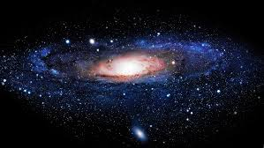
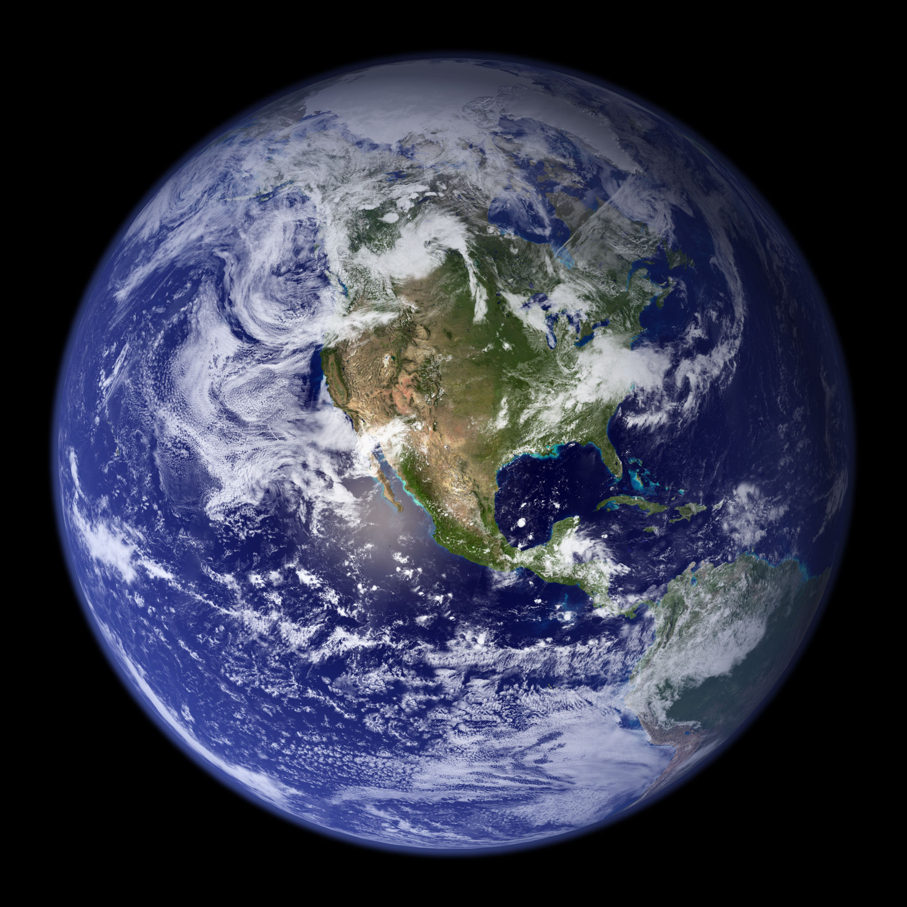
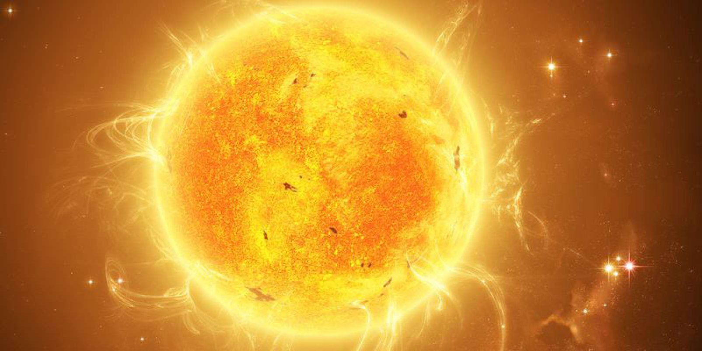
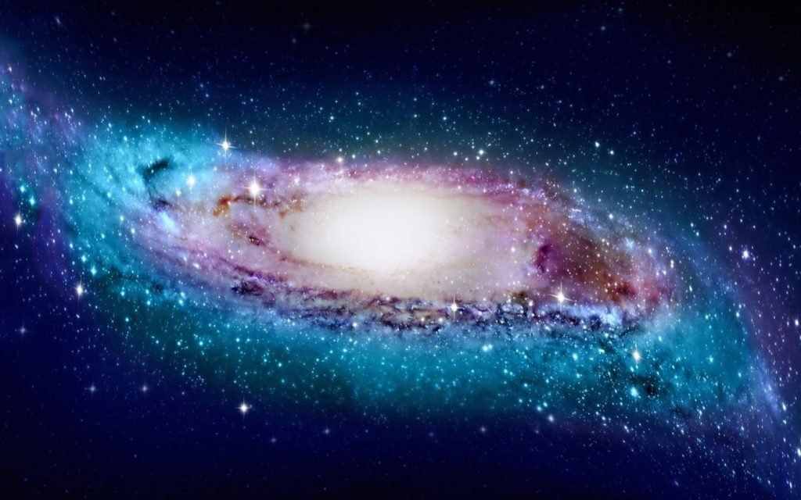
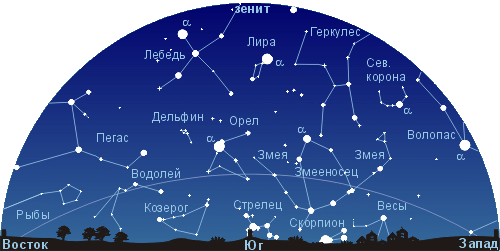
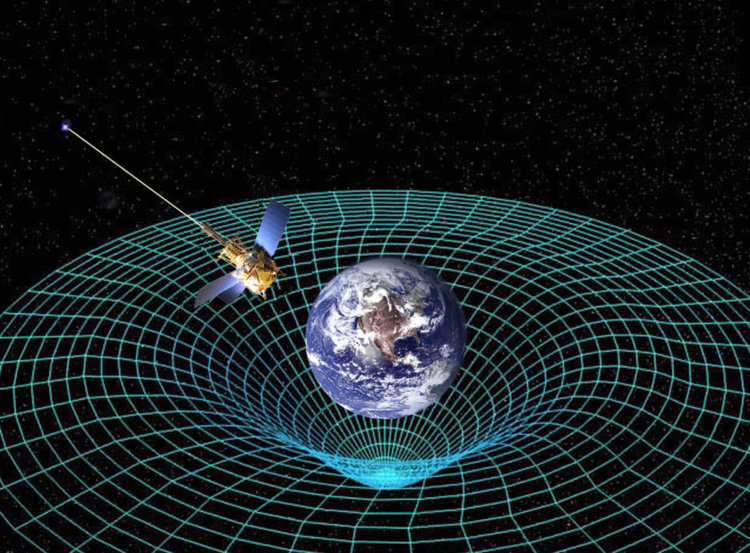
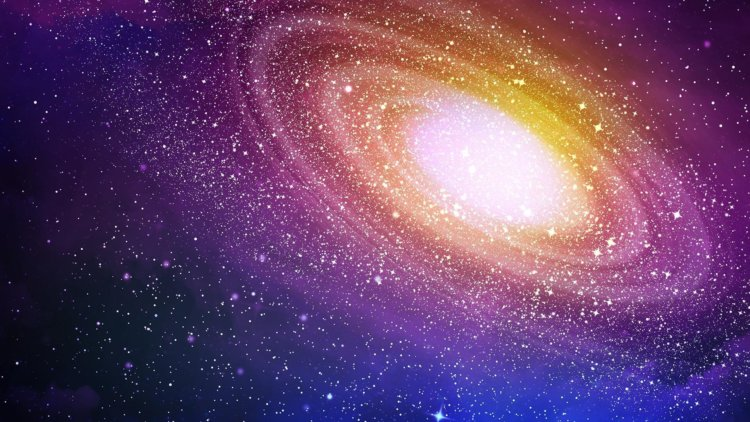

We are glad to welcome you on this website!
Hope you'll enjoy it!

Земля - планета, на которой мы живем; третья от Солнца и пятая из крупнейших планет в Солнечной системе. Как полагают, Солнечная система сформировалась из вихревых газово-пылевых облаков ок. 5 млрд. лет назад. Земля богата природными ресурсами, имеет в целом благоприятный климат и, возможно, является единственной планетой, на которой существует жизнь.
Узнать больше...

Солнце - центральное тело Солнечной системы - представляет собою горячий газовый шар. Оно в 750 раз превосходит по массе все остальные тела Солнечной системы вместе взятые. Именно поэтому всё в Солнечной системе можно приближенно считать вращающимся вокруг Солнца. Землю Солнце "перевешивает" в 330 000 раз. На солнечном диаметре можно было бы разместить цепочку из 109 таких планет, как наша. Солнце - ближайшая к Земле звезда, оно - единственная из звезд, чей видимый диск различим невооруженным глазом. Все остальные звезды, удаленные от нас на световые года, даже при рассмотрении в мощные телескопы, не открывают никаких подробностей своих поверхностей. Свет от Солнца до нас доходит за 8 с третью минут. По одной из гипотез, именно вместе с Солнцем образовалась наша планетная система, Земля, а затем и жизнь на ней.
Узнать больше...

Мле́чный Путь (также наша Галактика или просто Галактика с прописной буквы) — галактика, в которой находятся Земля, Солнечная системаПерейти к разделу «Расположение Солнца в Галактике» и все отдельные звёзды, видимые невооружённым глазом.
Узнать больше...

Созвездия - участки, на которые разделена небесная сфера для удобства ориентирования на звёздном небе. В древности созвездиями назывались характерные фигуры, образуемые яркими звёздами. Главнейшие из них были названы именами, заимствованными из мифологии (Геркулес, Персей и т.п.) или быта (Весы, Лира и т.п.).
Узнать больше...

Гравитация — это сила, которая притягивает два тела друг к другу, сила, которая заставляет яблоки падать на землю и планеты вращаться вокруг Солнца. Чем массивнее объект, тем сильнее его гравитационное притяжение.
Узнать больше...

Вселенная состоит из галактик - межзвёздного скопления, в одной из которых мы и находимся. Разглядеть то, что находится за наблюдаемой вселенной невозможно из-за того, что свет, исходящий от звёзд, не успел дойти до нас за четырнадцать миллиардов лет (это время с момента Большого взрыва, когда образовалась вселенная).
Не стоит путать понятие «вселенная» и «космос» - мы далеко не полностью изучили квантовое пространство. Современные телескопы попросту не могут узнать, существуют ли параллельные вселенные и правда ли, что вселенная/космос бесконечен.
Узнать больше...